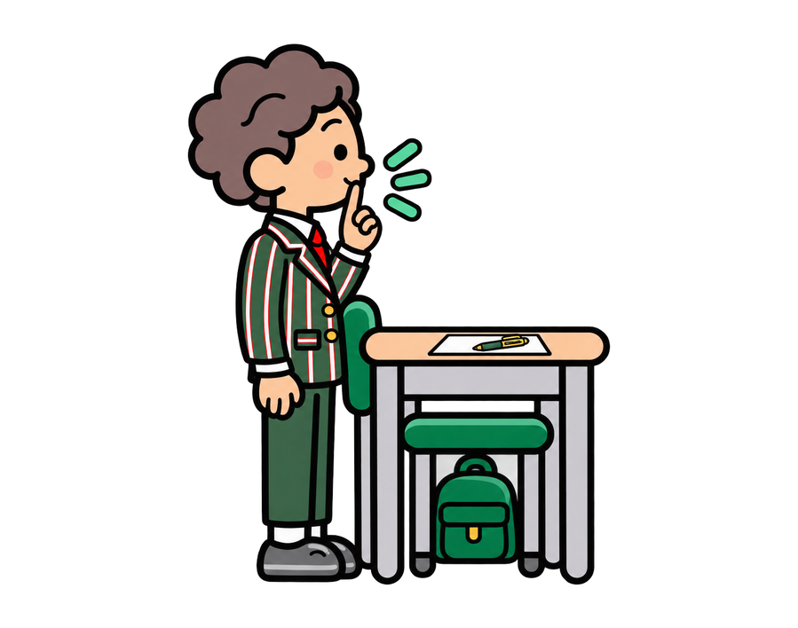
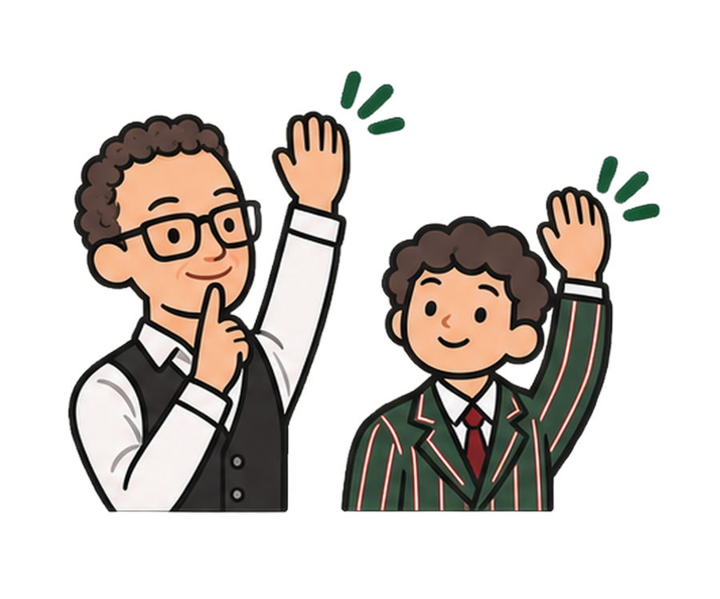

Be respectful
Look after the people and the space. Use names and manners. Students call me Mr McIntosh, not Sir.
Mathematics classroom
A calm, respectful mathematics class where everyone knows what to do, learning time is protected, and effort is visible.
Three everyday expectations sit above the lesson routines.
Look after the people and the space. Use names and manners. Students call me Mr McIntosh, not Sir.
Have a go, show your thinking, and learn from mistakes. Ask for help when you need it.
Arrive calm, follow the routines, and stay with the work so everyone can concentrate.
Every lesson follows the same shape: enter, learn, and leave. Seats are assigned. I greet students at the door and dismiss them — not the bell.
Enter
Greet, stand at the assigned desk, then start the Do Now.
Learn
Hands Mode, one clear page of working, and quiet maths talk.
Exit
Show the best page, pack when invited, leave when dismissed.
Enter — calm and ready
Routine 1

Routine 2
Routine 3
Learn — focused and productive

Routine 4
Routine 5
Routine 6
Exit — organised and dismissed
Routine 7
Routine 8
Routine 9
The raised hand is the signal. A timer or spoken cue may support it, but does not replace it.
“Hands Mode: voices down, eyes up.”
Late students wait quietly at the door, then go to their seat and start the work. I follow up privately later — no public explanation at the door.
I correct the behaviour, not the person. Reminders are calm and brief. Longer conversations happen privately. I also notice the standard when I see it.
The expected behaviour, once, clearly. For example: “Voices off. Eyes up. Hands empty.”
If needed, we practise the routine again, without a public argument.
After class, we talk away from an audience: What happened? What was the impact? What happens next?
If learning time has been deliberately lost, it may be made up, following school policy.
Repeated or more serious issues follow school process, and I will contact home when that is the next step.
You can email me at wmi@westlake.school.nz.